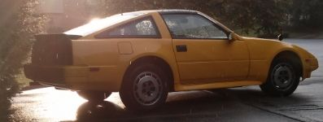
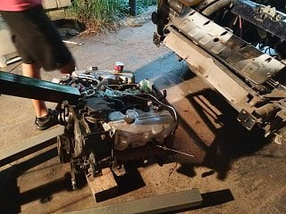
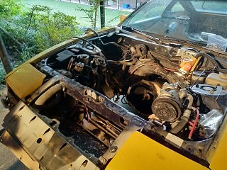
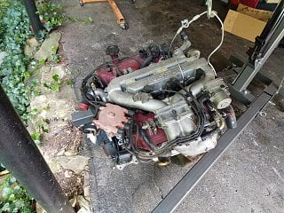

-
So my 86 NA engine has low compression in one cylinder, and I'm taking it out to get rebuilt. Not going for big power numbers, just a reliable build, but if something is easy to do during the process I wouldn't be opposed to it (Bore out for VG33 pistons if it needs to be bored/new pistons anyway or something) Right now, I'm planning on the following:
Machine Shop
- Repair cylinder (I think it's the rings)
- Polish crank
- Hot tank block
- Check bores
- Anything else to get back to stock
Myself
- Injector clean and rebuild (From 85T)
- New timing belt, stud, tensioner
- New water pump
- All new gaskets as needed
- New coolant hoses on engine
- New accessory belts
- New CHTS
- Clean MAF
I'm sure I'm missing at least a few things, what else should I try to take care of while the engine is out?
1986 300ZX N/A 5Speed project. Needs work, but that's the point, isn't it? -
Bearings. Engine mounts, power steering rack bushings (while you have easy access), oil pump (depending on mileage and wear)
If you're considering boring it out, it would be more cost effective to just get a VG33 block and prep that.
84 AE/Shiro #683/Shiro #820/84 Turbo -
Get a used VG30ET, save some $$$ and have an instant 200-205 HP. -
Sounds good, if the machine shop quotes something high to fix the low compression, I'll check around for a VG33. I do have an 85T parts car for turbo stuff at some point but the motor is bad. If the VG30 is okay, I'll add the oil pump, bearings, and ps rack bushings. I know z31parts has at least engine mounts and exhaust studs. Any suggestions for the rack bushings? Poly stuff seems to be out of stock most places
1986 300ZX N/A 5Speed project. Needs work, but that's the point, isn't it? -
So I opened up the engine and it looks like I may be getting a used VG33. Anything different that should happen for that? And I actually have an extra oil pump that is relatively new, how long do they normally last or is it definitely better to replace?
Also, what did you use for the shims? Did you have extra material from something?Last edited by designate72; 08-23-2018, 09:05 PM.
1986 300ZX N/A 5Speed project. Needs work, but that's the point, isn't it? -
Oil pump wear usually goes hand-in-hand with other oiled components in the motor, i.e. if the bearings and rockers show signs of excessive wear, then the
oil pump probably does too.
I bought two sets of bushings and each set comes with 3 bushings, one eccentric/lobed and two differing sizes that are concentric,
i cut up the concentric one that was too large for the rack diameter and used it as shim material and had to use the same one from the second kit.
84 AE/Shiro #683/Shiro #820/84 Turbo -
Ah that makes sense, the set is only about $10 on Amazon. If I get a used engine, should I bother opening it up or leave the heads on and just move over all the accessories.
1986 300ZX N/A 5Speed project. Needs work, but that's the point, isn't it? -
My planned VG33 swap, if it ever comes: Swap out the VG33 crank with the one from the VG30 and use the VG30 oil pump so the oil filter
can be fitted in the VG30 block location (VG33's have an oil pump mounted filter, iirc. Use the VG30ET cams in the VG33 heads.
There are a few build threads here that have done it that way and Xenon has a great writeup here: http://www.xenonzcar.com/z31/vg33eswap.html
84 AE/Shiro #683/Shiro #820/84 Turbo -
Honestly for the teeny displacement difference between the VG33 and the VG30 it's really not worth it for a "Not going for big power numbers, just a reliable build". There a ton of people parting NA's out or you can pick up a rust bucket or wreck with good drivetrain. Toss your turbo goodies on and have a reliable build.
If you decide you want more power, just turn up the boost. -
So actually after looking at what is available locally, it turns out the VG33 is about double the cost of the VG30. So it might make more sense to go with the VG30 and spend the extra time/money to install the turbo parts since I already have an entire parts car if I actually want more power. Either way, once I pick the engine I'll replace everything that I can, what I need to decide now is whether I need to take the new engine to the machine shop. Is there an easy way to test compression with the engine on a stand?
1986 300ZX N/A 5Speed project. Needs work, but that's the point, isn't it?Comment
-
Sadly no the lowest prices I can find are about $300 with no accessories. But that's using getusedparts.com and calling different yards. I don't think there's an actual pull-a-part nearby. -
Look around some more, is Ridgeville, SC too far away? There's a guy parting out 8 Z31's there. 6 of them are NA's. -
I actually found a used Maxima engine at a yard for $150 if I brought a siezed block to them for whatever reason so I picked that up today. Now to get it ready to go into the car.
-
-
look elseware, find a wrecked pathfinder/xterra/frontier/quest/villager i've been rocking an all original VG33 from a ditch jumped pathfinder it doesnt f'n matter. if it blows it blows have fun -
I'll probably pick up the closest and cheapest VG that I can find, I just want to get a working engine in the car.
1986 300ZX N/A 5Speed project. Needs work, but that's the point, isn't it? -
Got a 1990 Maxima VG30E from a yard and took the original VG30 out of the car. I'm still debating whether I should open the Maxima engine or just switch over accessories, replace the items like the timing belt, CHTS, plugs, wires, etc. and just go. Right now I've got the full timing belt/water pump/tensioner kit, new plugs, ngk wires, a clutch kit, new gaskets, aluminum engine mounts, and probably a few things I'm forgetting. I don't have an air compressor or a leakdown tester, but I have asked a few people that might know where I can borrow one. Would make me feel much better to test the engine before it goes in the car.  
1986 300ZX N/A 5Speed project. Needs work, but that's the point, isn't it?Comment
-
Yeah, always nice to hear it running in the car first. When I worked at a salvage yard, almost all of the vehicles were low mileage wrecks. We started everything we could before pulling. Had to watch out for broken stuff on the front end hits.
Not a bad idea to do a leak down before installing. Try to borrow a decent one, I have a cheap one and had mixed results when using it on my Jeep.
-

Copyright © 2006–. All rights reserved. Privacy Policy
Comment